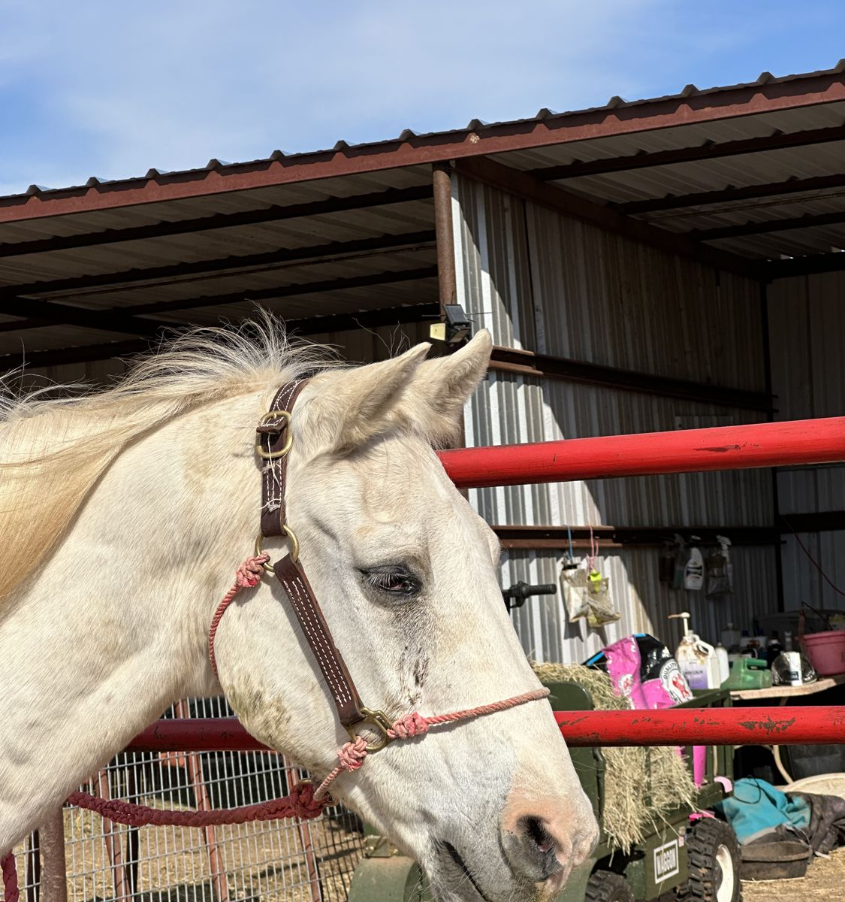

Home › The horses › The gray
At the ranchThe gray
Gray, red halter. Name, age, where it came from and its story are Braxton's to add. This page shows the layout every horse will get.

From the day it arrived
Updated as the horse recovers, with what was spent and who helped, so donors can see what their gift did.
- Intake vet · $ —
Arrival
Where the horse came from, its weight and condition, and the first vet check. Intake photo here.
- Farrier and dental · $ —
Feet and teeth
First farrier visit and dental float. What the farrier found, in plain words.
- Feed · $ — a month
Putting weight back on
Feed plan, weight change, and the first time the horse comes to the gate on its own.
Meeting a student
Groundwork with a student from the program. A photo from behind, or with a parent's OK.
- Total · $ —
Assigned
The horse is matched with a student for the summer program. Thank-you note to every donor who helped get it here.
Help this horse
Sponsor it by the month, or give once toward its feed, farrier and vet care. Either way you'll hear how it's doing.
Hear how this horse and the others are doing
One email a month, with the horse you helped and what it cost. No more than that.